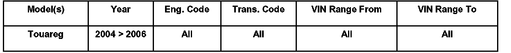
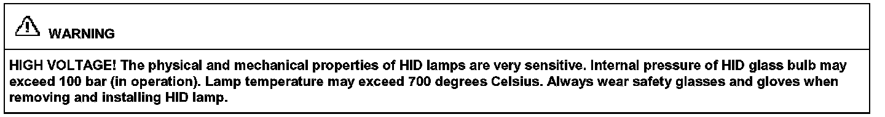
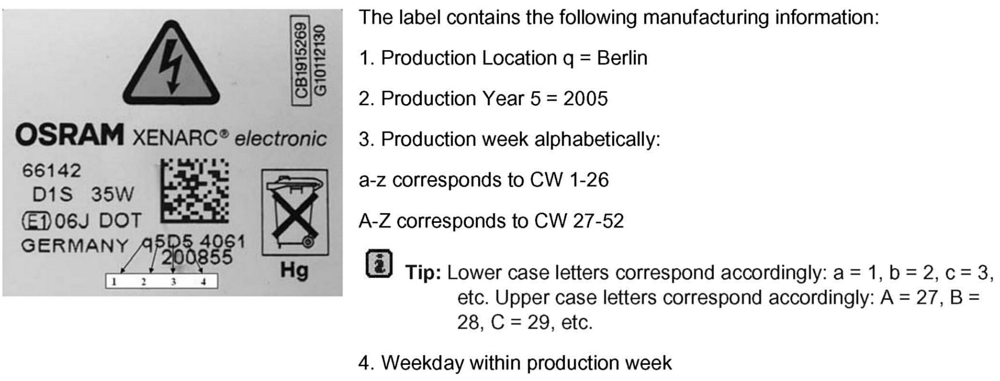
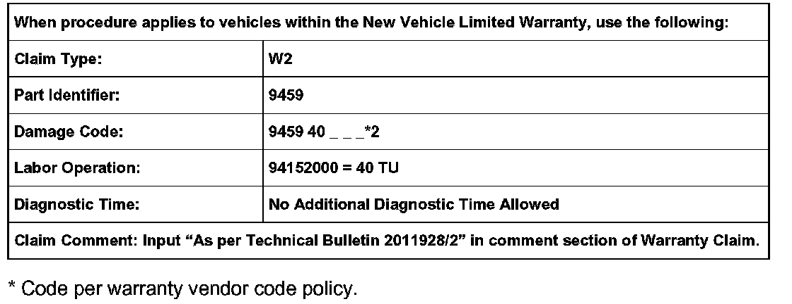
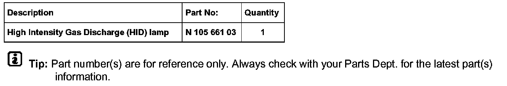

Lighting - HID Headlamp Flickers or is Inoperative
ConditionHigh Intensity Gas Discharge (HID) Lamp Flickers or is Inoperative
One High Intensity Gas Discharge (HID) lamp (-L13- or -L14-) flickers or becomes inoperative. Under either condition, Multifunction Indicator (MFI) will display "Please check lighting".
This may be perceived as fluctuations in brightness or flickering.
94 06 04 5/5/2006, 2011928/2

Applicable Vehicles
Technical Background
The condition may be caused by worn and/or corroded connectors on the High Intensity Gas Discharge (HID) lamp or the wiring harness connector.
Production Solution
New High Intensity Gas Discharge (HID) lamps (-L13-, -L14-) were installed after VIN: 7L_6D032648.
Service
Tip:
Switch OFF all electrical consumers. Switch OFF ignition and remove ignition key.

Warning
^ Access HID lamp. See Repair Manual for removal procedure.
^ Confirm calendar week (CW) of HID lamp for manufacturing date. Label is located on back of HID lamp.
High Intensity Gas Discharge (HID) Lamp Identification Label

The label contains the manufacturing information shown.
If HID lamp was manufactured before CW 31/2005 (e.g. q5E1):
^ Inspect the HID lamp connectors for corrosion and clean as necessary.
^ Replace affected HID lamp. See Required Parts and Tools. See Repair Manual for replacement procedure.
If High Intensity Gas Discharge (HID) lamp was manufactured in CW 31/2005 (e.g. q5E1) or later (e.g. q5Fx, q5Gx, q6xx):
^ Inspect HID lamp connectors for corrosion and clean as necessary.
^ Reinstall HID lamp and check operation.
If High Intensity Gas Discharge (HID) lamp continues to flicker and/or is inoperative:
^ Replace affected HID lamp. See Required Parts and Tools. See Repair Manual for replacement procedure.
^ Package and return the affected HID lamp to the Warranty Test Center for evaluation.
Tip:
When replacing a single High Intensity Gas Discharge (HID) lamp, there may be a burn-in period where the HID lamps have slightly different colors. This condition is normal, eventually the color will match.

Warranty

Required Parts and Tools